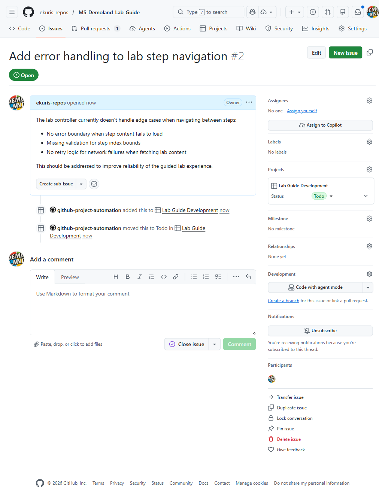
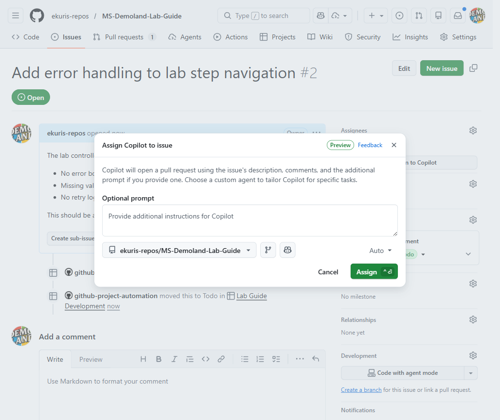

Org Agent Config - Coding Agent: It's Alive!
Configure organization and repository guidance for GitHub Copilot cloud agent, then hand work between your IDE and the cloud
Overview
What We'll Cover
Today's Journey
- Meet the Cloud Agent - How cloud execution differs from a local VS Code session
- Triggering the Agent - Assigning issues, writing effective descriptions
- Custom Instructions - Organization-level and repository-level configuration
- Environment Setup - The copilot-setup-steps.yml file
- Reviewing & Handoff - PR review patterns, IDE-to-agent workflows
- Governance & Best Practices - Sessions, capacity, security, and trust
Part 1
Meet the Cloud Agent
What Is Copilot Cloud Agent?
- An asynchronous agent with its own development environment, powered by GitHub Actions
- Issue assignment creates a pull request; a prompt can research, plan, or edit a branch before you request a PR
- Uses code, documentation, instructions, and any explicitly configured tools or context
- Available with supported paid Copilot plans, subject to organization and repository policies
graph LR
A[Bounded task] --> B[Prepare environment]
B --> C[Plan and implement]
C --> D[Validate changes]
D --> E[Human review]
Cloud vs. Local VS Code Sessions
Copilot Cloud Agent
- Uses a separate development environment
- Start with issue assignment or an agent task prompt
- Works asynchronously; you can close your laptop
- Works on a branch or PR, depending on the entry point
- Does not inherit your local workspace or editor tools
Local VS Code Session
- Works against your local workspace
- Triggered by chat prompts
- Works interactively; you guide it in real time
- Edits files in your workspace directly
- Tools, terminal, and MCP access depend on permissions and configuration
Parallelizing Agent Work
Local: Separate Workspaces
- Use VS Code's Agents window to organize independent sessions
- Use separate worktrees when tasks need isolated working directories
- Review and merge each result deliberately
Cloud: Multiple Issues
- Assign separate, bounded issues to Copilot
- Each task has its own branch and development environment
- Review the PRs independently; merge when ready
- Account for usage cost and coordination, not just elapsed time
- You manage the boundaries. Worktrees isolate edits, but overlapping changes can still conflict when merged.
How the Cloud Agent Works
- 1. Assign an issue - Select Copilot as assignee and provide any additional prompt
- 2. Prepare - The agent uses its development environment and your optional setup workflow
- 3. Implement - It reads context, changes code, and attempts validation
- 4. Track the PR - The issue-assignment path creates a PR; a draft can exist while work continues
- 5. Review and iterate - Inspect evidence, approve workflow runs when appropriate, and direct follow-up to the agent
- Prompt-based alternative: Research or edit on a branch first, then request a PR when ready
Part 2
Triggering the Cloud Agent

Assigning Issues to Copilot
- Open the issue's Assignees control and select Copilot; an Assign to Copilot shortcut may also appear
- Add context in the optional prompt; check the target repository and base branch
- Copilot receives the title, description, and comments that exist at assignment time
- Later issue comments are not a continuing input channel; use session steering or the PR for follow-up

Writing Effective Issue Descriptions
✅ Good Issue
- Clear, specific title
- Describes the desired outcome
- Lists acceptance criteria
- References relevant files or APIs
- Scoped to a single, well-defined task
❌ Weak Issue
- Vague title like "Fix the bug"
- No context about expected behavior
- Multiple unrelated tasks in one issue
- No mention of affected files or modules
- Assumes knowledge the agent does not have
Watching the Agent Work
- Open the Agents panel or repository tab and select the session
- Inspect the session log, changes, and actual test or build results
- Steer a running session with a follow-up prompt; it is applied after the current tool call
- For PR follow-up, mention
@copilotwith a specific change request - A status summary is not proof of success; check what ran and what could not run

Part 3
Custom Instructions
Organization-Level Instructions
- An organization owner opens Organization Settings → Copilot → Custom instructions
- Enter guidance under Preferences and instructions, then Save changes
- Requires an organization with Copilot Business or Enterprise
- Supported on GitHub.com for Copilot Chat, code review, and cloud agent
- Use for organization-wide conventions; instructions are guidance, not policy enforcement
Example: Organization Settings Text
Paste into Organization Settings → Copilot → Custom instructions, then save.
# Organization Coding Standards for Copilot
## General Rules
- Follow the repository's declared language and supported versions.
- Use ESLint and Prettier configurations from the repository root.
- Always include unit tests for new functions and methods.
## Security
- Never hardcode secrets, API keys, or credentials.
- Use parameterized queries for all database access.
- Validate all user input at system boundaries.
## Pull Request Standards
- Keep PRs focused on a single concern.
- Include a clear description of what changed and why.
- Reference the originating issue number.Repository-Level Instructions
- Add a
.github/copilot-instructions.mdfile inside your repository - These instructions apply only to that repository
- Use them for: framework-specific patterns, project architecture, naming conventions
- Add scoped rules in
.github/instructions/*.instructions.mdwithapplyTopatterns AGENTS.mdcan provide agent-oriented guidance within the repository- Keep applicable guidance consistent; do not assume a universal precedence order across clients
Example: Repo-Level copilot-instructions.md
# Project-Specific Instructions
## Architecture
- This is a Next.js application using the App Router.
- Use the framework and runtime versions declared by this repository.
- API routes live in `app/api/` and use Route Handlers.
- Database access goes through Prisma; never write raw SQL.
## Testing
- Use Vitest for unit tests and Playwright for E2E tests.
- Place unit tests next to the source file: `foo.ts` → `foo.test.ts`.
## Styling
- Use Tailwind CSS utility classes. Do not create custom CSS files.
- Follow this repository's Tailwind theme and design-token configuration.Layering: Org + Repo Instructions
- Give each kind of guidance a clear scope:
- Organization settings → common conventions for supported GitHub.com experiences
- Repository files →
.github/copilot-instructions.md, scoped*.instructions.md, and applicableAGENTS.md - Issue description → task-specific context and requirements
- Support and precedence vary by client and feature; avoid contradictory instructions
- Enforce requirements with tests, rulesets, permissions, and human review, not prose alone
Part 4
Environment Setup
The copilot-setup-steps.yml File
- Lives at
.github/workflows/copilot-setup-steps.yml - A GitHub Actions workflow with a single job named
copilot-setup-steps - Merge it to the default branch; check out code before repository-dependent commands
- Preinstall dependencies and tools; keep preparation focused and repeatable
- Optional, but recommended: without it, the agent can attempt its own setup, which may be slower or unreliable
Example: copilot-setup-steps.yml
name: Copilot Setup Steps
on: workflow_dispatch
jobs:
copilot-setup-steps:
runs-on: ubuntu-latest
permissions:
contents: read
steps:
- uses: actions/checkout@v6
- uses: actions/setup-node@v7
with:
node-version: "24"
cache: npm
- run: npm ci- Assumes a Node 24-compatible project and a consistent
package-lock.json; otherwise use the repository's supported runtime - Document actual validation commands in repository instructions, for example
npm run buildand a terminating CI-modenpm test
Part 5
Reviewing & Handoff
Reviewing Cloud Agent Pull Requests
- Inspect the diff, session log, test evidence, edge cases, and any unvalidated behavior
- By default, Actions workflows wait: inspect changes before selecting Approve and run workflows
- Request specific follow-up with
@copiloton the PR, or push your own refinements - The task initiator's approval does not count toward required PR approvals; arrange another reviewer
- Copilot cannot approve or merge its PR; humans own readiness and merge
Common Patterns in Agent Output
What the Agent Does Well
- Boilerplate and scaffolding
- CRUD endpoints and data models
- Unit tests for existing functions
- Documentation and README updates
- Small, well-scoped refactors
Where to Watch Closely
- Complex business logic with edge cases
- Performance-sensitive code paths
- Security-critical authentication flows
- Cross-service integration points
- Large-scale architectural changes
Handoff: VS Code → Cloud Agent
- Explore locally, then define a bounded outcome and acceptance criteria
- In a supported Copilot harness session, use
/delegateto continue a focused task in the cloud - For a Local harness session, use Session Target → Cloud when available
- Durable fallback: write a detailed issue and assign it to Copilot
- Confirm repository/base branch and available context; unpublished edits and local tools do not automatically become cloud resources
Handoff: Cloud Agent → VS Code
- The agent opens a PR; check out the branch locally in VS Code
- Use VS Code agent mode or Copilot Chat to refine the agent's work
- Run the app locally to verify behavior beyond what automated tests cover
- Push your refinements to the same branch; the PR updates automatically
- This "agent start, human finish" pattern combines speed with precision
Part 6
Governance & Best Practices
Managing Sessions and Capacity
- Cloud-agent model usage consumes GitHub AI Credits under current usage-based billing; monitor budgets and actual usage
- Compute is separate: check current Actions/runner charges and the repository's billing owner
- Break work into bounded tasks; current cloud sessions have a 59-minute execution limit
- Development environments are ephemeral by default, but session logs persist and optional Memory can retain facts
- Access depends on organization/repository policy; adoption metrics are not a billing ledger
Security and Trust
- Write access is restricted to the task branch; the agent cannot approve or merge its PR
- Admins can explicitly provide Agents secrets and variables; arbitrary Actions secrets are not automatically inherited
- A default allowlisted firewall limits agent internet access, but is not a complete security boundary
- Default security checks and code review help; human validation and workflow approval gates remain
- Session logs persist; data retention and model-training use are separate policy questions
- Use current privacy terms for training assurances; do not infer them from ephemeral compute
Best Practices for Success
- Write detailed issues with acceptance criteria, file references, and examples
- Scope tasks tightly; one issue per focused change, not sweeping refactors
- Prepare a repeatable environment and document actual build/test commands
- Use the right instruction scope: organization settings, repository files, and task context
- Review iteratively; inspect evidence and direct specific follow-up to the session or PR
- Use handoff workflows; explore locally, then delegate to the agent (and vice versa)
- Monitor budgets; distinguish AI-credit usage, compute, and adoption metrics
Summary
Wrap-Up & Next Steps
Key Takeaways
- Copilot cloud agent supports issue-to-PR work and prompt-based research, planning, and branch-first changes
- Organization settings and repository instruction files are different configuration mechanisms
.github/workflows/copilot-setup-steps.ymlprovides optional, repeatable environment preparation- Sessions and PRs are the follow-up channels; later issue comments are not
- Handoffs require context checks; cloud execution does not inherit arbitrary local resources
- Humans own validation, approvals, budgets, and merge; ephemeral compute does not erase logs or Memory
Where to Go Next
- Agent Potato: License to Chat - Local agent workflows
- Enterprise-Grade Marmalade - Organization-scale configuration
- Review Me, Review Me Not, Review Me - Code review workflows
- Copilot on GitHub.com and organization custom instructions
- Agent environment setup and review and approval gates
- Current Copilot billing and VS Code harnesses and handoff
Thank You
Questions? Reach out on Teams or open an issue.